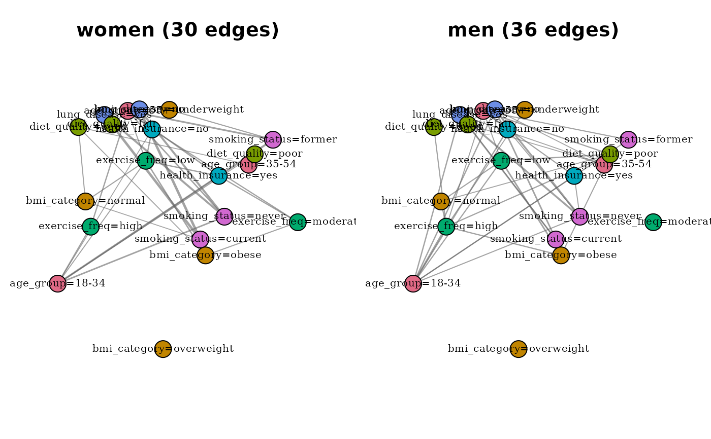

Build a modality graph for an observed subgroup
Source:R/build_conditional_modality_graph.R
build_conditional_modality_graph.RdSubsets data by one or more observed conditioning variables and
levels, then calls build_modality_graph on the remaining
variables. The conditioning specification is stored on the returned object
so that downstream analyses can report the subgroup definition.
Arguments
- data
A data frame of categorical variables.
- given
A named list specifying the conditioning. Each name is a column in
data; each value is a length-1 character vector giving the level to condition on. Example:list(sex = "female", wave = "2020"). The conditioning columns are dropped from the modality graph by construction, so they do not appear as nodes.- drop_conditioning_vars
Logical. If
TRUE(default), the conditioning columns are removed before graph construction. IfFALSE, they are retained, in which case they will appear as single-modality variables and contribute no edges (their only remaining level has probability 1 on the conditional subset). The default is almost always what you want;FALSEis provided for debugging and diagnostic use.- ...
Further arguments passed to
build_modality_graph(e.g.,remove_na,min_count).
Value
A catmodgraph object as returned by
build_modality_graph, augmented with a
conditioning component: a list with elements
given (the input specification), n_original (row
count of the input data), and n_conditional (row count
after subsetting). The S3 class is unchanged so that existing
methods (plotting, pruning, clustering, comparison) work without
modification.
Details
This is the subgroup-comparison entry point: for example, "what does the modality association structure look like among women only?" or "among respondents from wave 3 only?". The function conditions only on observed variables supplied by the user. It does not estimate latent classes, infer clusters of respondents, or perform causal adjustment.
Conditioning variables must be observed, not estimated. This function is designed for sociodemographic strata (sex, country, wave, study site) — variables whose value is recorded directly in the data. Conditioning on a derived cluster label reintroduces the circularity that the 0.6.0 refocus removed: the cluster was itself estimated from the association structure, so the "conditional" graph is not meaningfully separable from the overall graph. If you need to analyse the association structure within latent classes, use poLCA to fit the class model first, then pass the external class assignment as observed input.
Composition with other functions. The returned object is
a plain catmodgraph and can be passed directly to
plot.catmodgraph, prune_modality_edges,
cluster_modalities, and
compare_modality_graphs. When used in
compare_modality_graphs(), supply a named list where the
names are short descriptions of the conditioning (e.g.,
list(women = mg_f, men = mg_m)); the function does not
read the conditioning attribute to generate panel titles.
Examples
# \donttest{
data(survey_health)
mg_f <- build_conditional_modality_graph(
survey_health, given = list(sex = "female")
)
mg_m <- build_conditional_modality_graph(
survey_health, given = list(sex = "male")
)
compare_modality_graphs(list(women = mg_f, men = mg_m),
restrict = "common")

# }